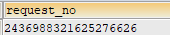
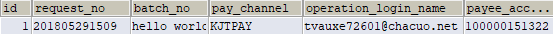

| 断言类型 | 断言说明 |
|---|---|
| equal | 实际值与期望值完全相等 |
| contain | 实际值包含期望值(忽略大小写) |
| key-value | 实际值与相对应key的期望中的值相等,或忽略大小写比较相等,
或忽略空字符比较相等,或包含期望值,或匹配期望值的正则形式, 所有的key-value对比较都为true,断言通过 |
| match | 实际值中匹配到期望值的正则表达式 |
| exclude | 实际值中不期望匹配到的正则表达式 |
用例前置后置处理时能够识别的表达式及识别后的处理规则:
| 正则表达式 | 功能 | 举例 |
|---|---|---|
| (?i)<uuid\(?\d*\)?> | <uuid(num)> 随机唯一字符串随机唯一字符串
参数:num-非必填,指定要截断的长度 |
<uuid()>:随机生成32位唯一字符串(16进制) 结果:599b255f7aaa41768108e77540d1249a
<uuid(5)>:将生成的唯一字符串截取前5位 结果:599b2,(注意:截取后的字符串不再保证唯一性) |
| (?i)<longDate()> | 返回以1970-1-1 00:00:00 GMT 计算出的毫秒数 | <longDate()>:1536715432573 |
| (?i)<date\(-?\d*\)> | <date(num)> 生成一个日期(默认今天),格式"yyyy-MM-dd"
参数:num-非必填,指定日期按天的偏移量 |
假设现在是2018-08-08
<date()>: 生成今天的日期,结果:2018-08-08 <date(-1)>:生成昨天的日期,结果:2018-08-07 <date(10)>:生成10天后的日期,结果:2018-08-18 |
| (?i)<datetime\(-?\d*\)> | <datetime(num)>生成一个datetime,格式"yyyy-MM-dd HH:mm:ss"
参数:num-非必填,指定datetime按小时的偏移量 |
同上 |
| (?i)<time\(-?\d*\) | <time(num)>生成一个时间,格式"HH:mm:ss"
参数:num-非必填,指定时间按分钟的偏移量 |
同上 |
| (?i)<randomI\(\d*,?\d*\)> | <randomI(min,max)>在区间[min,max)中随机生成一个整数,注意max必须大于min
参数:min-非必填,指定随机范围的下限(包含) 参数:max-非必填,指定随机范围的上限(不包含) |
<randomI()>:不填写任何参数,将随机一个[0,100)中的整数
<randomI(100,999)>:随机一个整数,范围[100,999) |
| (?i)<randomF\((\d+\.\d+)?,?(\d+\.\d+)?\)> | <randomF(min,max)>在区间[min,max)中随机生成一个浮点数,生成浮点数的精度将与min参数的精度保持一致
参数:min-非必填,指定随机范围的下限(包含),随机数的精度与此参数的精度保持一致 参数:max-非必填,指定随机范围的上限(不包含) |
<randomF()>:不填写任何参数,将从[0.01,1.00)中随机一个浮点数,结果:0.23
<randomF(2.00,5.00)>:将从[2.00,5.00)区间中随机一个浮点数,浮点数的精度与min参数保持一致,此例中将保留两位小数,结果:3.16 |
| (?i)<pureSql\(.+\)> | <pureSql(pureDmlSql)>执行pureDmlSql并且使用执行结果替换此匹配项
参数:pureDmlSql-必填,pureDmlSql为可直接在数据库中执行的sql,不可再包含其它替换规则,否则可能会执行失败 |
<pureSql(select id from table)>:执行查询语句,并使用查询结果替换此处,结果:1
<pureSql(update table t set t.status=-1 where t.id=1)>执行更新语句,并使用更新返回结果替换此处,结果:1 |
| (?i)<sql([^<>]*)> | <sql(dmlSql)>执行sql语句,无论何时,必须确保执行结果返回有且仅有一行(rows=1) 当返回结果仅一列时(columns=1时),直接使用此列值替换<sql(dmlSql)>表达式,当返回结果为多列时(columns>1),将使用各列的值替换当前列的引用项 参数:dmlSql-必填,dmlSql中不可包含<或> |
例1:<sql(SELECT o.`request_no` FROM trade_pay_to_account_order o ORDER BY o.`created_time`DESC limit 1)> sql执行如图,此时查询结果仅返回一列,系统将使用值"2436988321625276626"替换当前匹配到的sql表达式 例2:<sql(SELECT * FROM trade_pay_to_account_order o LIMIT 1)> sql执行如图 此时系统将使用各个列的值替换整个文本域的$(key),比如参数中如果填写了$(request_no),$(pay_channel),则会分别替换为201805291509,KJTPAY 例3:<sql(update table t set t.status=-1 where t.id=1)>执行更新语句,并使用更新返回结果替换此处,结果:1 |
| (?i)<var\([^<>]+\)> | <var(fieldName)>使用测试类中的字段值替换此匹配项
参数:fieldName-必填,fieldName必须是测试类中维护的字段名 |
<var(requestNo)>将从当前测试类中,获取可访问的字段名为requestNo的字段的值,替换当前匹配项 |
| <\$\d+\([^<>]*\)> | <$index(xxx)>将请求参数中此匹配项括号中的内容赋值给<ref(index)
参数:index-必填,index必须是整数,标记引用源 |
<$1(abc)>将abc赋值到所有 <ref(1)>的位置,并且<$1(abc)>自动替换为abc |
| (?i)<ref\(\d+\)> | <ref(index)>与<$index(xxx)>配合使用,引用xxx内容 | |
| (?i)<put\(\w+,[^<>]*\)> |
<put(key,value)> 将key,value存储到临时变量中,并且此表达式使用value替换,使用<get(key)>可取得此值 参数:key-必填,只能由单词字符组成[a-zA-Z_0-9],待存储的临时值的名称 参数:value-必填,待存储的值 注意: value有两种特殊写法,表明从当前测试结果(JSONObject)中取值,分别是: \$\w+ : 例:$responseCode,从当前测试用例的测试返回结果中,找到第一个非null的responseCode的值 \$\(\{\w+|\[\d+)+ : 例:${resultList[1{name,从当前测试用例的测试返回结果中,按此路径查找name的值 |
<put(title,我是一个标题)> : 将(title=我是一个标题)存入临时表中 <put(title,$title)> : 首先根据$title去返回结果中找值(找到第一个title不为null的值),然后存入临时表中 <put(title,${resultList[0{id)>:首先根据${resultList[0{id)去返回结果中找值,然后存入临时表中 |
| (?i)<putR\(\w+,[^<>]*\)> | <putR(key,value)> put & remove,将(key,value)存储到临时变量中,并且此表达式的占位将被移除,使用<get(key)>可取得此值 |
<putR(title,我是一个标题)> : 将(title=我是一个标题)存入临时表中,并且源字符串中此表达式将移除 |
| (?i)<get\(\w+\)> | <get(key)> 从临时表中取出名称为key的值,与put配合使用 | <get(title)> 从临时表中取出名称为`title`对应的值,如果有多个`title`,则取最近一次的值 |